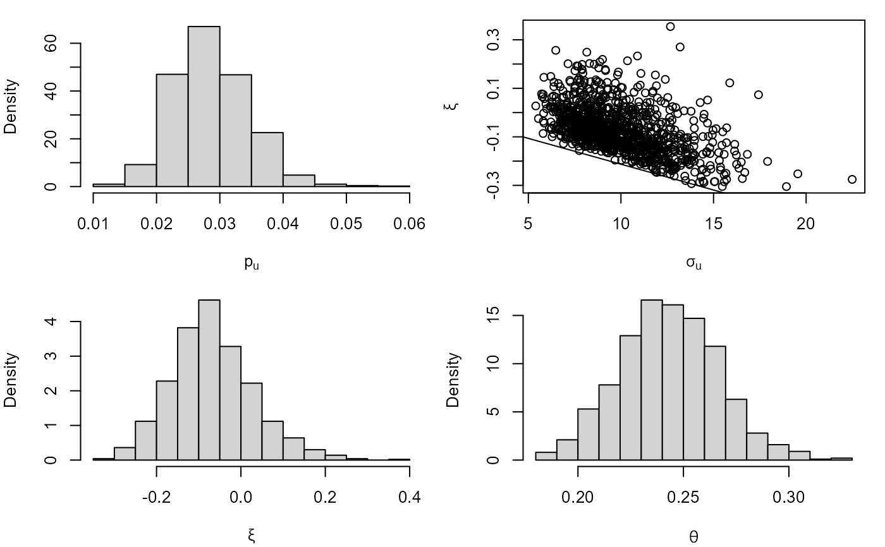

Performs threshold-based Bayesian inference for 3 aspects of stationary time series extremes: the probability that the threshold is exceeded, the marginal distribution of threshold excesses and the extent of clustering of extremes, as summarised by the extremal index.
blite(
data,
u,
cluster,
k = 1,
inc_cens = TRUE,
ny,
gp_prior = revdbayes::set_prior(prior = "mdi", model = "gp"),
b_prior = revdbayes::set_bin_prior(prior = "jeffreys"),
theta_prior_pars = c(1, 1),
n = 1000,
type = c("vertical", "none"),
...
)A numeric vector or numeric matrix of raw data. If data
is a matrix then the log-likelihood is constructed as the sum of
(independent) contributions from different columns. A common situation is
where each column relates to a different year.
If data contains missing values then split_by_NAs is
used to divide the data further into sequences of non-missing values,
stored in different columns in a matrix. Again, the log-likelihood
is constructed as a sum of contributions from different columns.
A numeric scalar. The extreme value threshold applied to the data.
See Details for information about choosing u.
This argument is used to set the argument cluster to
meatCL, which calculates the matrix \(V\)
passed as the argument V to adjust_loglik.
If data is a matrix and cluster is missing then
cluster is set so that data in different columns are in different
clusters. If data is a vector and cluster is missing then
cluster is set so that each observation forms its own cluster.
If cluster is supplied then it must have the same structure as
data: if data is a matrix then cluster must be a
matrix with the same dimensions as data and if data is a
vector then cluster must be a vector of the same length as
data. Each entry in cluster sets the cluster of the
corresponding component of data.
Arguments passed to kgaps.
k sets the value of the run parameter \(K\) in the \(K\)-gaps
model for the extremal index.
inc_cens determines whether contributions from right-censored
inter-exceedance times are used. See Details for information
about choosing k.
A numeric scalar. The (mean) number of observations per year.
Setting this appropriately is important when making predictive inferences
using predict.blite, but ny is not used by
blite so it need not be supplied now. If ny is supplied to
blite then it is stored for use by predict.blite.
Alternatively, ny can be supplied in a later call to
predict.blite. If ny is supplied to
both blite and predict.blite then the value supplied
to predict.blite will take precedence, with no warning
given.
A list to specify a prior distribution for the GP parameters
(\(\sigma\)u,
\(\xi\)), set using set_prior.
A list to specify a prior distribution for the Bernoulli
parameter \(p\)u, set
using set_bin_prior.
A numerical vector of length 2 containing the respective values of the parameters \(\alpha\) and \(\beta\) of a Beta(\(\alpha\), \(\beta\)) prior for the extremal index \(\theta\).
An integer scalar. The size of posterior sample required.
A character scalar. Either "vertical" to adjust the
independence log-likelihood vertically, or "none" for no
adjustment. Horizontal adjustment is not offered because it does not
preserve the correct support of the posterior distribution.
Further arguments to be passed to the function
meatCL in the sandwich package.
In particular, the clustering adjustment argument cadjust
may make a difference if the number of clusters is not large.
An object of class c("blite", "lite", "chandwich").
This object is an n
\(\times 4\) matrix containing the posterior samples, with column names
c("p[u]", "sigma[u]", "xi", "theta").
The object also has the attributes "Bernoulli", "gp",
"theta", which provide the fitted model objects returned from
adjust_loglik (for "Bernoulli" and
"gp") and kgaps (for "theta").
The named input arguments are returned in a list as the attribute
inputs. If ny was not supplied then its value is NA.
The call to blite is provided in the attribute "call".
A call to flite is used to create adjusted log-likelihoods
for \(p\)u and
(\(\sigma\)u, \(\xi\)).
The object returned from the call is provided as the attribute
"flite_object".
Objects inheriting from class "blite" have coef,
nobs, plot, summary and vcov
methods. See bliteMethods.
See flite for details of the (adjusted) likelihoods
on which these Bayesian inferences are based.
The likelihood is based on a model for 3 independent aspects.
A Bernoulli(\(p\)u) model for whether a given observation exceeds the threshold \(u\).
A generalised Pareto, GP(\(\sigma\)u, \(\xi\)), model for the marginal distribution of threshold excesses.
The \(K\)-gaps model for the extremal index \(\theta\).
The general approach follows Fawcett and Walshaw (2012).
The contributions to the likelihood for
\(p\)u and
(\(\sigma\)u, \(\xi\))
are based on the vertically-adjusted likelihoods described in
flite. This is an example of Bayesian inference using a
composite likelihood Ribatet et al (2012). Priors for
\(p\)u
(\(\sigma\)u, \(\xi\))
and \(\theta\) are set using the arguments gp_prior,
b_prior and theta_prior_pars.
Currently, only priors where
\(p\)u
(\(\sigma\)u, \(\xi\))
and \(\theta\) are independent a priori are allowed.
Two tuning parameters need to be chosen: a threshold \(u\) and the
\(K\)-gaps run parameter \(K\). The exdex
package has a function choose_uk to inform this
choice.
Random samples are simulated from the posteriors for
\(p\)u and
(\(\sigma\)u, \(\xi\))
(using ru) and \(\theta\) (using
kgaps_post).
Fawcett, L. and Walshaw, D. (2012), Estimating return levels from serially dependent extremes. Environmetrics, 23, 272-283. doi:10.1002/env.2133
Ribatet, M., Cooley, D., & Davison, A. C. (2012). Bayesian inference from composite likelihoods, with an application to spatial extremes. Statistica Sinica, 22(2), 813-845.
bliteMethods, including plotting the posterior
samples.
flite for frequentist threshold-based inference
for time series extremes.
choose_uk to inform the choice of the
threshold \(u\) and run parameter \(K\).
### Cheeseboro wind gusts
cdata <- exdex::cheeseboro
# Each column of the matrix cdata corresponds to data from a different year
# blite() sets cluster automatically to correspond to column (year)
cpost <- blite(cdata, u = 45, k = 3)
summary(cpost)
#>
#> Call:
#> blite(data = cdata, u = 45, k = 3)
#>
#> Posterior mean Posterior SD
#> p[u] 0.02821 0.005976
#> sigma[u] 10.00000 2.377000
#> xi -0.07852 0.092970
#> theta 0.24250 0.023950
## Plots of posterior samples
plot(cpost)

## Credible intervals
confint(cpost)
#> 2.5% 97.5%
#> pu 0.01739726 0.04090561
#> sigmau 6.25968834 15.77793954
#> xi -0.25164821 0.13422607
#> theta 0.19871879 0.28950612